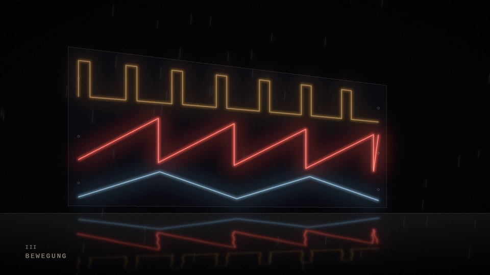

i / drei stimmen im neon
SID/65 · 2:17

load the film from youtube-nocookie.com · only after this clickSID/65 · SM001 “Drei Stimmen, eine Stadt” · track 2 · 118 BPM · A minor
Drei Stimmen im Neon
Three neon tubes by a wet street, each bent into the waveform of its voice: pulse for the melody, sawtooth for the bass, noise and triangle for the drums. With every note a tube takes on the number of cycles of the new pitch, strikes with a brief flicker and glows as brightly as the chip's envelope allows. The rain mirrors the three voices.
computed from the score · 1080p · 30 fps
open on youtube